Week 5 – Data manipulation with dplyr
Learning objectives
- Chain operations together into a workflow using pipes
- Learn the three key dplyr functions for manipulating your data
arrange()for sorting the observations in your tablemutate()for creating a new variable or modifying an existing variablesummarise()for collapsing values in one of more columns to a single summary value- Learn about faceting in ggplot2 to split your data into separate categories and create a series of sub-plots arranged in a grid
Data manipulation with dplyr
dplyr is one of the packages that gets loaded as part of the tidyverse.
library(tidyverse)## ── Attaching core tidyverse packages ──────────────────────── tidyverse 2.0.0 ──
## ✔ dplyr 1.1.1 ✔ readr 2.1.4
## ✔ forcats 1.0.0 ✔ stringr 1.5.0
## ✔ ggplot2 3.4.1 ✔ tibble 3.2.1
## ✔ lubridate 1.9.2 ✔ tidyr 1.3.0
## ✔ purrr 1.0.1
## ── Conflicts ────────────────────────────────────────── tidyverse_conflicts() ──
## ✖ dplyr::filter() masks stats::filter()
## ✖ dplyr::lag() masks stats::lag()
## ℹ Use the ]8;;http://conflicted.r-lib.org/conflicted package]8;; to force all conflicts to become errorsdplyr is the Swiss army knife in the tidyverse, providing many useful functions for manipulating tabular data in data frames or tibbles. We’re going to look at the key functions for filtering our data, modifying the contents and computing summary statistics.
We’ll also introduce the pipe operator,
%>%, for chaining operations together
into mini workflows in a way that makes for more readable and
maintainable code.
Finally, we’ll return to plotting and look at a powerful feature of ggplot2, faceting, that allows you to divide your plots into subplots by splitting the observations based on one or more categorical variables.
We’ll again use the METABRIC data set to illustrate how these operations work.
metabric <- read_csv("data/metabric_clinical_and_expression_data.csv")
metabric## # A tibble: 1,904 × 32
## Patient_ID Cohort Age_at_diagnosis Survival_time Survival_status Vital_status
## <chr> <dbl> <dbl> <dbl> <chr> <chr>
## 1 MB-0000 1 75.6 140. LIVING Living
## 2 MB-0002 1 43.2 84.6 LIVING Living
## 3 MB-0005 1 48.9 164. DECEASED Died of Dis…
## 4 MB-0006 1 47.7 165. LIVING Living
## 5 MB-0008 1 77.0 41.4 DECEASED Died of Dis…
## 6 MB-0010 1 78.8 7.8 DECEASED Died of Dis…
## 7 MB-0014 1 56.4 164. LIVING Living
## 8 MB-0022 1 89.1 99.5 DECEASED Died of Oth…
## 9 MB-0028 1 86.4 36.6 DECEASED Died of Oth…
## 10 MB-0035 1 84.2 36.3 DECEASED Died of Dis…
## # ℹ 1,894 more rows
## # ℹ 26 more variables: Chemotherapy <chr>, Radiotherapy <chr>,
## # Tumour_size <dbl>, Tumour_stage <dbl>, Neoplasm_histologic_grade <dbl>,
## # Lymph_nodes_examined_positive <dbl>, Lymph_node_status <dbl>,
## # Cancer_type <chr>, ER_status <chr>, PR_status <chr>, HER2_status <chr>,
## # HER2_status_measured_by_SNP6 <chr>, PAM50 <chr>, `3-gene_classifier` <chr>,
## # Nottingham_prognostic_index <dbl>, Cellularity <chr>, …dplyr verbs
We will be looking at the 3 key dplyr functions this week:
arrange()for sorting rowsmutate()for modifying columns or creating new onessummarise()for computing summary values
In looking at each of these in turn, we’ll be applying these to the
entire data set. It is possible to combine these with the
group_by() function to instead operate on separate groups
within our data set but this is something we’ll cover in detail next
week.
The dplyr operations are commonly referred to as “verbs” in a data manipulation grammar. These verbs have a common syntax and work together in a consistent and uniform manner. They all have the following shared behaviours:
The first argument in each function is a data frame (or tibble)
Any additional arguments describe what operation to perform on the data frame
Variable names, i.e. column names, are referred to without using quotes
The result of an operation is a new data frame
Chaining operations using %>%
Let’s consider again an earlier example in which we filtered the
METABRIC data set to retain just the patients who were still alive at
the time of the study and had survived for more than 10 years (120
months). We use filter() to select the rows corresponding
to the patients meeting these criteria and can then use
select() to only display the variables (columns) we’re most
interested in.
patients_of_interest <- filter(metabric, Survival_status == "LIVING", Survival_time > 120)
patient_details_of_interest <- select(patients_of_interest, Patient_ID, Survival_time, Tumour_stage, Nottingham_prognostic_index)
patient_details_of_interest## # A tibble: 545 × 4
## Patient_ID Survival_time Tumour_stage Nottingham_prognostic_index
## <chr> <dbl> <dbl> <dbl>
## 1 MB-0000 140. 2 6.04
## 2 MB-0006 165. 2 4.05
## 3 MB-0014 164. 2 4.02
## 4 MB-0039 164. 1 2.04
## 5 MB-0045 165. 2 5.04
## 6 MB-0053 161. 2 3.05
## 7 MB-0054 160. 2 4.07
## 8 MB-0060 141. 2 4.05
## 9 MB-0062 154. 1 4.03
## 10 MB-0066 157. 2 4.03
## # ℹ 535 more rowsHere we’ve used an intermediate variable,
patients_of_interest, which we only needed in order to get
to the final result. We could just have used the same name to avoid
cluttering our environment and overwritten the results from the
filter() operation with those of the select()
operation.
patients_of_interest <- select(patients_of_interest, Patient_ID, Survival_time, Tumour_stage, Nottingham_prognostic_index)Another less readable way of writing this code is to nest the
filter() function call inside the select().
Although this looks very unwieldy and is not easy to follow, nested
function calls are very common in a lot of R code you may come
across.
patients_of_interest <- select(filter(metabric, Survival_status == "LIVING", Survival_time > 120), Patient_ID, Survival_time, Tumour_stage, Nottingham_prognostic_index)
nrow(patients_of_interest)## [1] 545However, there is another way chaining together a series of
operations into a mini workflow that is elegant, intuitive and makes for
very readable R code. For that we need to introduce a new operator, the
pipe operator,
%>%.
The pipe operator %>%
The pipe operator takes the output from one operation, i.e. whatever is
on the left-hand side of %>% and passes it in as the
first argument to the second operation, or function, on the right-hand
side.
x %>% f(y) is equivalent to
f(x, y)
For example:
select(starwars, name, height, mass)
can be rewritten as
starwars %>% select(name, height, mass)
This allows for chaining of operations into workflows, e.g.
starwars %>%
filter(species == “Droid”)
%>%
select(name, height, mass)
The %>% operator comes from the magrittr
package (do you get the reference?) and is available when we load the
tidyverse using library(tidyverse).
Piping in R was motivated by the Unix pipe, |, in which the
output from one process is redirected to be the input for the next. This
is so named because the flow from one process or operation to the next
resembles a pipeline.
We can rewrite the code for our filtering and column selection operations as follows.
patients_of_interest <- metabric %>%
filter(Survival_status == "LIVING", Survival_time > 120) %>%
select(Patient_ID, Survival_time, Tumour_stage, Nottingham_prognostic_index)Note how each operation takes the output from the previous operation as its first argument. This way of coding is embraced wholeheartedly in the tidyverse hence almost every tidyverse function that works on data frames has the data frame as its first argument. It is also the reason why tidyverse functions return a data frame regardless of whether the output could be recast as a vector or a single value.
“Piping”, the act of chaining operations together, becomes really useful when there are several steps involved in filtering and transforming a data set.
The usual way of developing a workflow is to build it up one step at a time, testing the output produced at each stage. Let’s do that for this case.
We start by considering just the patients who are living.
patients_of_interest <- metabric %>%
filter(Survival_status == "LIVING")We then add another filter for the survival time.
patients_of_interest <- metabric %>%
filter(Survival_status == "LIVING") %>%
filter(Survival_time > 120)At each stage we look at the resulting
patients_of_interest data frame to check we’re happy with
the result.
Finally we only want certain columns, so we add a
select() operation.
patients_of_interest <- metabric %>%
filter(Survival_status == "LIVING") %>%
filter(Survival_time > 120) %>%
select(Patient_ID, Survival_time, Tumour_stage, Nottingham_prognostic_index)
# print out the result
patients_of_interest## # A tibble: 545 × 4
## Patient_ID Survival_time Tumour_stage Nottingham_prognostic_index
## <chr> <dbl> <dbl> <dbl>
## 1 MB-0000 140. 2 6.04
## 2 MB-0006 165. 2 4.05
## 3 MB-0014 164. 2 4.02
## 4 MB-0039 164. 1 2.04
## 5 MB-0045 165. 2 5.04
## 6 MB-0053 161. 2 3.05
## 7 MB-0054 160. 2 4.07
## 8 MB-0060 141. 2 4.05
## 9 MB-0062 154. 1 4.03
## 10 MB-0066 157. 2 4.03
## # ℹ 535 more rowsWhen continuing our workflow across multiple lines, we need to be
careful to ensure the %>% is at the end of the line. If
we try to place this at the start of the next line, R will think we’ve
finished the workflow prematurely and will report an error at what it
considers the next statement, i.e. the line that begins with
%>%.
# R considers the following to be 2 separate commands, the first of which ends
# with the first filter operation and runs successfully.
# The second statement is the third and last line, is not a valid commmand and
# so you'll get an error message
patients_of_interest <- metabric %>%
filter(Survival_status == "LIVING")
%>% filter(Survival_time > 120)This is very similar to what we saw with adding layers and other
components to a ggplot using the + operator, where we
needed the + to be at the end of a line.
We’ll be using the pipe %>% operator throughout the
rest of the course so you’d better get used to it. But actually we think
you’ll come to love it as much as we do.
Sorting using arrange()
It is sometimes quite useful to sort our data frame based on the
values in one or more of the columns, particularly when displaying the
contents or saving them to a file. The arrange() function
in dplyr provides this sorting capability.
For example, we can sort the METABRIC patients into order of increasing survival time.
arrange(metabric, Survival_time)## # A tibble: 1,904 × 32
## Patient_ID Cohort Age_at_diagnosis Survival_time Survival_status Vital_status
## <chr> <dbl> <dbl> <dbl> <chr> <chr>
## 1 MB-0284 1 51.4 0 LIVING Living
## 2 MB-6229 5 75.3 0.1 DECEASED Died of Dis…
## 3 MB-0627 1 54.1 0.767 LIVING Living
## 4 MB-0880 1 73.6 1.23 LIVING Living
## 5 MB-0125 1 74.0 1.27 LIVING Living
## 6 MB-0374 1 34.7 1.43 LIVING Living
## 7 MB-0148 1 53.2 1.77 LIVING Living
## 8 MB-5525 3 63.2 2 LIVING Living
## 9 MB-6092 5 80.6 2.3 DECEASED Died of Oth…
## 10 MB-0117 1 60.1 2.4 LIVING Living
## # ℹ 1,894 more rows
## # ℹ 26 more variables: Chemotherapy <chr>, Radiotherapy <chr>,
## # Tumour_size <dbl>, Tumour_stage <dbl>, Neoplasm_histologic_grade <dbl>,
## # Lymph_nodes_examined_positive <dbl>, Lymph_node_status <dbl>,
## # Cancer_type <chr>, ER_status <chr>, PR_status <chr>, HER2_status <chr>,
## # HER2_status_measured_by_SNP6 <chr>, PAM50 <chr>, `3-gene_classifier` <chr>,
## # Nottingham_prognostic_index <dbl>, Cellularity <chr>, …Or we might be more interested in the patients that survived the
longest so would need the order to be of decreasing survival time. For
that we can use the helper function desc() that works
specifically with arrange().
arrange(metabric, desc(Survival_time))## # A tibble: 1,904 × 32
## Patient_ID Cohort Age_at_diagnosis Survival_time Survival_status Vital_status
## <chr> <dbl> <dbl> <dbl> <chr> <chr>
## 1 MB-4189 3 61.0 355. DECEASED Died of Oth…
## 2 MB-4079 3 63.2 351 DECEASED Died of Oth…
## 3 MB-0270 1 30.0 337. LIVING Living
## 4 MB-4235 3 67.5 336. DECEASED Died of Dis…
## 5 MB-4292 3 58.8 336. DECEASED Died of Oth…
## 6 MB-4212 3 45.5 330. LIVING Living
## 7 MB-4548 3 50.4 323. LIVING Living
## 8 MB-4633 3 67.0 318. LIVING Living
## 9 MB-4332 3 34.4 308. LIVING Living
## 10 MB-4418 3 56.1 308. LIVING Living
## # ℹ 1,894 more rows
## # ℹ 26 more variables: Chemotherapy <chr>, Radiotherapy <chr>,
## # Tumour_size <dbl>, Tumour_stage <dbl>, Neoplasm_histologic_grade <dbl>,
## # Lymph_nodes_examined_positive <dbl>, Lymph_node_status <dbl>,
## # Cancer_type <chr>, ER_status <chr>, PR_status <chr>, HER2_status <chr>,
## # HER2_status_measured_by_SNP6 <chr>, PAM50 <chr>, `3-gene_classifier` <chr>,
## # Nottingham_prognostic_index <dbl>, Cellularity <chr>, …As with the other tidyverse functions and, in particular, the other 4
key dplyr ‘verbs’, arrange() works rather well in workflows
in which successive operations are chained using
%>%.
patients_of_interest <- metabric %>%
filter(Survival_status == "LIVING") %>%
filter(Survival_time > 120) %>%
select(Patient_ID, Survival_time, Tumour_stage, Nottingham_prognostic_index) %>%
arrange(desc(Survival_time))
# print out the result
patients_of_interest## # A tibble: 545 × 4
## Patient_ID Survival_time Tumour_stage Nottingham_prognostic_index
## <chr> <dbl> <dbl> <dbl>
## 1 MB-0270 337. 2 4.03
## 2 MB-4212 330. NA 3.04
## 3 MB-4548 323. 2 5.00
## 4 MB-4633 318. 2 5.05
## 5 MB-4332 308. 1 4.04
## 6 MB-4418 308. 1 3.04
## 7 MB-6021 301. NA 3
## 8 MB-4702 301. 2 4.07
## 9 MB-4839 299. NA 1.02
## 10 MB-4735 298. 2 3.08
## # ℹ 535 more rowsWe can sort by more than one variable by adding more variable
arguments to arrange().
arrange(patients_of_interest, Tumour_stage, Nottingham_prognostic_index)## # A tibble: 545 × 4
## Patient_ID Survival_time Tumour_stage Nottingham_prognostic_index
## <chr> <dbl> <dbl> <dbl>
## 1 MB-0230 200. 0 1.07
## 2 MB-5186 203. 1 1.02
## 3 MB-0245 165. 1 1.03
## 4 MB-0318 169. 1 1.04
## 5 MB-3797 228. 1 1.05
## 6 MB-4897 197. 1 2.00
## 7 MB-2721 252. 1 2.02
## 8 MB-0275 186. 1 2.02
## 9 MB-2564 285. 1 2.02
## 10 MB-0244 150. 1 2.02
## # ℹ 535 more rowsHere we’ve sorted first by tumour stage from lowest to highest value and then by the Nottingham prognostic index for when there are ties, i.e. where the tumour stage is the same.
Sorting is most commonly used in workflows as one of the last steps before printing out a data frame or writing out the table to a file.
Modifying data using mutate()
In one of the examples of filtering observations using
filter() above, we created a new logical variable called
Deceased.
metabric$Deceased <- metabric$Survival_status == "DECEASED"This is an example of a rather common type of data manipulation in
which we crate a new column based on the values contained in one or more
other columns. The dplyr package provides the
mutate() function for this purpose.
metabric <- mutate(metabric, Deceased = Survival_status == "DECEASED")Both of these methods adds the new column to the end.
Note that variables names in the mutate() function call
do not need to be prefixed by metabric$ just as they don’t
in any of the dplyr functions.
We can overwrite a column and this is quite commonly done when we
want to change the units. For example, our tumour size values are in
millimetres but the formula for the Nottingham prognostic index needs
the tumour size to be in centimetres. We can convert to
Tumour_size to centimetres by dividing by 10.
metabric <- mutate(metabric, Tumour_size = Tumour_size / 10)Nottingham Prognostic Index
The Nottingham prognostic index (NPI) is used to determine prognosis following surgery for breast cancer. Its value is calculated using three pathological criteria: the size of the tumour, the number of lymph nodes involved, and the grade of the tumour.
The formula for the Nottingham prognostic index is:
NPI = (0.2 * S) + N + G
where
- S is the size of the tumour in centimetres
- N is the node status (0 nodes = 1, 1-3 nodes = 2, >3 nodes = 3)
- G is the grade of tumour (Grade I = 1, Grade II = 2, Grade III = 3)
We’ll recalculate the Nottingham prognostic index using the values
Tumour_size, Neoplasm_histologic_grade and
Lymph_node_status columns in our METABRIC data frame.
metabric <- mutate(metabric, NPI = 0.2 * Tumour_size + Lymph_node_status + Neoplasm_histologic_grade)
select(metabric, Tumour_size, Lymph_node_status, Neoplasm_histologic_grade, NPI, Nottingham_prognostic_index)## # A tibble: 1,904 × 5
## Tumour_size Lymph_node_status Neoplasm_histologic_grade NPI
## <dbl> <dbl> <dbl> <dbl>
## 1 2.2 3 3 6.44
## 2 1 1 3 4.2
## 3 1.5 2 2 4.3
## 4 2.5 2 2 4.5
## 5 4 3 3 6.8
## 6 3.1 1 3 4.62
## 7 1 2 2 4.2
## 8 2.9 2 2 4.58
## 9 1.6 2 3 5.32
## 10 2.8 1 2 3.56
## # ℹ 1,894 more rows
## # ℹ 1 more variable: Nottingham_prognostic_index <dbl>There is a discrepency. Can you see what the problem is?
It appears that the tumour size wasn’t correctly converted into centimetres in the original NPI calculation or that the wrong scaling factor for tumour size was used. This could explain why the plots we created in weeks 1 and 2 featuring the Nottingham prognostic index looked so odd. We’ll see if they look any better with our recalculated values.
ggplot(data = metabric) +
geom_point(mapping = aes(x = Age_at_diagnosis, y = NPI), na.rm = TRUE)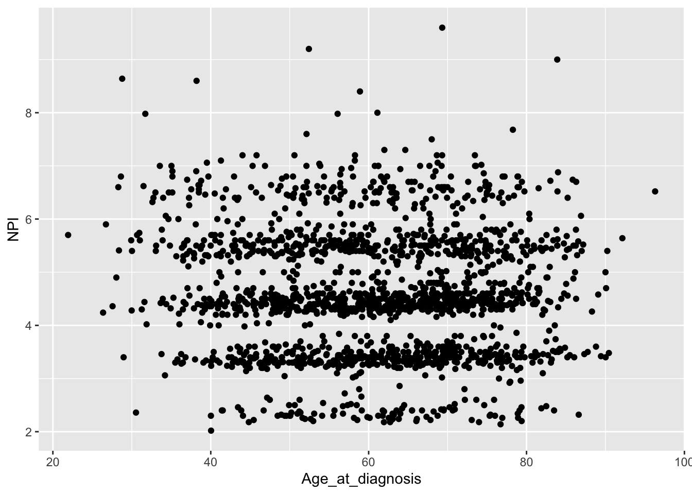
There is still some banding but nothing like the NPI values downloaded from cBioPortal which line up very closely to whole numbers.
The round() function is really useful
for rounding numerical values to a specified number of decimal places.
We’ll read in the METABRIC data again and create a small workflow that
carries out the tumour size conversion, computes the NPI, rounds the
tumour size and the resulting NPI value to 1 decimal place and displays
the results in decreasing order of NPI.
read_csv("data/metabric_clinical_and_expression_data.csv") %>%
mutate(Tumour_size = Tumour_size / 10) %>%
mutate(NPI = 0.2 * Tumour_size + Lymph_node_status + Neoplasm_histologic_grade) %>%
mutate(Tumour_size = round(Tumour_size, digits = 1)) %>%
mutate(NPI = round(NPI, digits = 1)) %>%
arrange(desc(NPI)) %>%
select(Tumour_size, Lymph_node_status, Neoplasm_histologic_grade, NPI)## # A tibble: 1,904 × 4
## Tumour_size Lymph_node_status Neoplasm_histologic_grade NPI
## <dbl> <dbl> <dbl> <dbl>
## 1 18 3 3 9.6
## 2 16 3 3 9.2
## 3 15 3 3 9
## 4 13 3 3 8.6
## 5 18.2 2 3 8.6
## 6 12 3 3 8.4
## 7 10 3 3 8
## 8 9.9 3 3 8
## 9 9.9 3 3 8
## 10 8.4 3 3 7.7
## # ℹ 1,894 more rowsMutating multiple columns
In that last workflow we included the same rounding operation applied
to two different variables. It would be nice to be able to carry out
just the one mutate() but apply it to both
Tumour_size and NPI columns and we can using
mutate_at().
metabric %>%
mutate_at(vars(Tumour_size, NPI), round, digits = 1) %>%
select(Patient_ID, Tumour_size, NPI)## # A tibble: 1,904 × 3
## Patient_ID Tumour_size NPI
## <chr> <dbl> <dbl>
## 1 MB-0000 2.2 6.4
## 2 MB-0002 1 4.2
## 3 MB-0005 1.5 4.3
## 4 MB-0006 2.5 4.5
## 5 MB-0008 4 6.8
## 6 MB-0010 3.1 4.6
## 7 MB-0014 1 4.2
## 8 MB-0022 2.9 4.6
## 9 MB-0028 1.6 5.3
## 10 MB-0035 2.8 3.6
## # ℹ 1,894 more rowsThis is slightly more complicated. We had to group the variables for
which we want the function to apply using vars(). We then
gave the function name as the next argument and finally any additional
arguments that the function needs, in this case the number of
digits.
We can use the range operator and the same helper functions as we did
for selecting columns using select() inside
vars().
For example, we might decide that our expression values are given to a much higher degree of precision than is strictly necessary.
metabric %>%
mutate_at(vars(ESR1:MLPH), round, digits = 2) %>%
select(Patient_ID, ESR1:MLPH)## # A tibble: 1,904 × 9
## Patient_ID ESR1 ERBB2 PGR TP53 PIK3CA GATA3 FOXA1 MLPH
## <chr> <dbl> <dbl> <dbl> <dbl> <dbl> <dbl> <dbl> <dbl>
## 1 MB-0000 8.93 9.33 5.68 6.34 5.7 6.93 7.95 9.73
## 2 MB-0002 10.0 9.73 7.51 6.19 5.76 11.2 11.8 12.5
## 3 MB-0005 10.0 9.73 7.38 6.4 6.75 9.29 11.7 10.3
## 4 MB-0006 10.4 10.3 6.82 6.87 7.22 8.67 11.9 10.5
## 5 MB-0008 11.3 9.96 7.33 6.34 5.82 9.72 11.6 12.2
## 6 MB-0010 11.2 9.74 5.95 5.42 6.12 9.79 12.1 11.4
## 7 MB-0014 10.8 9.28 7.72 5.99 7.48 8.37 11.5 10.8
## 8 MB-0022 10.4 8.61 5.59 6.17 7.59 7.87 10.7 9.95
## 9 MB-0028 12.5 10.7 5.33 6.22 6.25 10.3 12.2 10.9
## 10 MB-0035 7.54 11.5 5.59 6.41 5.99 10.2 12.8 13.5
## # ℹ 1,894 more rowsOr we could decide that all the columns whose names end with “_status” are in fact categorical variables and should be converted to factors.
metabric %>%
mutate_at(vars(ends_with("_status")), as.factor) %>%
select(Patient_ID, ends_with("_status"))## # A tibble: 1,904 × 7
## Patient_ID Survival_status Vital_status Lymph_node_status ER_status PR_status
## <chr> <fct> <fct> <fct> <fct> <fct>
## 1 MB-0000 LIVING Living 3 Positive Negative
## 2 MB-0002 LIVING Living 1 Positive Positive
## 3 MB-0005 DECEASED Died of Dis… 2 Positive Positive
## 4 MB-0006 LIVING Living 2 Positive Positive
## 5 MB-0008 DECEASED Died of Dis… 3 Positive Positive
## 6 MB-0010 DECEASED Died of Dis… 1 Positive Positive
## 7 MB-0014 LIVING Living 2 Positive Positive
## 8 MB-0022 DECEASED Died of Oth… 2 Positive Negative
## 9 MB-0028 DECEASED Died of Oth… 2 Positive Negative
## 10 MB-0035 DECEASED Died of Dis… 1 Positive Negative
## # ℹ 1,894 more rows
## # ℹ 1 more variable: HER2_status <fct>Anonymous functions
The mutate_at() function, and the related
mutate_if() and mutate_all() functions, are
really very powerful but with that comes additional complexity.
For example, we may come across situations where we’d like to apply the same operation to multiple columns but where there is no available function in R to do what we want.
Let’s say we want to convert the petal and sepal measurements in the
iris data set from centimetres to millimetres. We’d either
need to create a new function to do this conversion or we could use what
is known as an anonymous function, also known as a lambda
expression.
There is no ‘multiply by 10’ function and it seems a bit pointless to
create one just for this conversion so we’ll use an anonymous function
instead – anonymous because it has no name, it’s an in situ
function only used in our mutate_at() function call.
iris %>%
as_tibble() %>%
mutate_at(vars(Sepal.Length:Petal.Width), ~ . * 10)## # A tibble: 150 × 5
## Sepal.Length Sepal.Width Petal.Length Petal.Width Species
## <dbl> <dbl> <dbl> <dbl> <fct>
## 1 51 35 14 2 setosa
## 2 49 30 14 2 setosa
## 3 47 32 13 2 setosa
## 4 46 31 15 2 setosa
## 5 50 36 14 2 setosa
## 6 54 39 17 4 setosa
## 7 46 34 14 3 setosa
## 8 50 34 15 2 setosa
## 9 44 29 14 2 setosa
## 10 49 31 15 1 setosa
## # ℹ 140 more rowsThe ~ denotes that we’re using an
anonymous function (it is the symbol for formulae in R) and the
. is a placeholder for the column being operated on. In
this case, we’re multiplying each of the columns between
Sepal.Length and Petal.Width inclusive by
10.
If you think this is getting fairly complicated you’d be right. We’ll
leave it there for now but point you to the help page for
mutate_at if you’re interested in finding out more.
Computing summary values using summarise()
We’ll cover the fifth of the main dplyr ‘verb’ functions,
summarise(), only briefly here. This
function computes summary values for one or more variables (columns) in
a table. Here we will summarise values for the entire table but this
function is much more useful in combination with group_by()
in working on groups of observations within the data set. We will look
at summarizing groups of observations next week.
Any function that calculates a single scalar value from a vector can
be used with summarise(). For example, the
mean() function calculates the arithmetic mean of a numeric
vector. Let’s calculate the average ESR1 expression for tumour samples
in the METABRIC data set.
mean(metabric$ESR1)## [1] 9.607824The equivalent operation using summarise() is:
summarise(metabric, mean(ESR1))## # A tibble: 1 × 1
## `mean(ESR1)`
## <dbl>
## 1 9.61If you prefer Oxford spelling, in which -ize is preferred to -ise, you’re in luck as dplyr accommodates the alternative spelling.
Both of the above statements gave the same average expression value
but these were output in differing formats. The mean()
function collapses a vector to single scalar value, which as we know is
in fact a vector of length 1. The summarise() function, as
with most tidyverse functions, returns another data frame, albeit one in
which there is a single row and a single column.
Returning a data frame might be quite useful, particularly if we’re summarising multiple columns or using more than one function, for example computing the average and standard deviation.
summarise(metabric, ESR1_mean = mean(ESR1), ESR1_sd = sd(ESR1))## # A tibble: 1 × 2
## ESR1_mean ESR1_sd
## <dbl> <dbl>
## 1 9.61 2.13Notice how we also named the output columns in this last example.
summarise()
summarise() collapses a data frame into a single row by
calculating summary values of one or more of the columns.
It can take any function that takes a vector of values and returns a single value. Some of the more useful functions include:
-
Centre:
mean(),median() -
Spread:
sd(),mad() -
Range:
min(),max(),quantile() -
Position:
first(),last() -
Count:
n()
Note the first(), last() and n()
are only really useful when working on groups of observations using
group_by().
n() is a special function that returns the
number of observations; it doesn’t take a vector argument, i.e. a
column.
It is also possible to summarise using a function that takes more than one value, i.e. from multiple columns. For example, we could compute the correlation between the expression of FOXA1 and MLPH.
summarise(metabric, correlation = cor(FOXA1, MLPH))## # A tibble: 1 × 1
## correlation
## <dbl>
## 1 0.898Summarizing multiple columns
Much like mutate() with its mutate_at(),
mutate_if() and mutate_all() variants, there
is a family of summarise() functions similarly named for
applying the same summarization function to multiple columns in a single
operation. These work in much the same way as their mutate
cousins.
summarise_at() allows us to select the
columns on which to operate using an additional vars()
argument.
summarise_at(metabric, vars(FOXA1, MLPH), mean)## # A tibble: 1 × 2
## FOXA1 MLPH
## <dbl> <dbl>
## 1 10.8 11.4Selecting the columns is done in the same way as for
mutate_at() and select().
summarise_all() summarises values in
all columns.
metabric %>%
select(ESR1:MLPH) %>%
summarise_all(mean)## # A tibble: 1 × 8
## ESR1 ERBB2 PGR TP53 PIK3CA GATA3 FOXA1 MLPH
## <dbl> <dbl> <dbl> <dbl> <dbl> <dbl> <dbl> <dbl>
## 1 9.61 10.8 6.24 6.20 5.97 9.50 10.8 11.4You have to be careful with summarise_all() that all
columns can be summarised with the given summary function. For example,
what happens if we try to compute an average of a set of character
values?
summarise_all(metabric, mean, na.rm = TRUE)## Warning: There were 14 warnings in `summarise()`.
## The first warning was:
## ℹ In argument: `Patient_ID = (function (x, ...) ...`.
## Caused by warning in `mean.default()`:
## ! argument is not numeric or logical: returning NA
## ℹ Run ]8;;ide:run:dplyr::last_dplyr_warnings()dplyr::last_dplyr_warnings()]8;; to see the 13 remaining warnings.## # A tibble: 1 × 34
## Patient_ID Cohort Age_at_diagnosis Survival_time Survival_status Vital_status
## <dbl> <dbl> <dbl> <dbl> <dbl> <dbl>
## 1 NA 2.64 61.1 125. NA NA
## # ℹ 28 more variables: Chemotherapy <dbl>, Radiotherapy <dbl>,
## # Tumour_size <dbl>, Tumour_stage <dbl>, Neoplasm_histologic_grade <dbl>,
## # Lymph_nodes_examined_positive <dbl>, Lymph_node_status <dbl>,
## # Cancer_type <dbl>, ER_status <dbl>, PR_status <dbl>, HER2_status <dbl>,
## # HER2_status_measured_by_SNP6 <dbl>, PAM50 <dbl>, `3-gene_classifier` <dbl>,
## # Nottingham_prognostic_index <dbl>, Cellularity <dbl>,
## # Integrative_cluster <dbl>, Mutation_count <dbl>, ESR1 <dbl>, ERBB2 <dbl>, …We get a lot of warning messages and NA values for those
columns for which computing an average does not make sense.
summarise_if() can be used to select
those values for which a summarization function is appropriate.
summarise_if(metabric, is.numeric, mean, na.rm = TRUE)## # A tibble: 1 × 19
## Cohort Age_at_diagnosis Survival_time Tumour_size Tumour_stage
## <dbl> <dbl> <dbl> <dbl> <dbl>
## 1 2.64 61.1 125. 2.62 1.75
## # ℹ 14 more variables: Neoplasm_histologic_grade <dbl>,
## # Lymph_nodes_examined_positive <dbl>, Lymph_node_status <dbl>,
## # Nottingham_prognostic_index <dbl>, Mutation_count <dbl>, ESR1 <dbl>,
## # ERBB2 <dbl>, PGR <dbl>, TP53 <dbl>, PIK3CA <dbl>, GATA3 <dbl>, FOXA1 <dbl>,
## # MLPH <dbl>, NPI <dbl>It is possible to summarise using more than one function in which case a list of functions needs to be provided.
summarise_at(metabric, vars(ESR1, ERBB2, PGR), list(mean, sd))## # A tibble: 1 × 6
## ESR1_fn1 ERBB2_fn1 PGR_fn1 ESR1_fn2 ERBB2_fn2 PGR_fn2
## <dbl> <dbl> <dbl> <dbl> <dbl> <dbl>
## 1 9.61 10.8 6.24 2.13 1.36 1.02Pretty neat but I’m not sure about those column headings in the output – fortunately we have some control over these.
summarise_at(metabric, vars(ESR1, ERBB2, PGR), list(average = mean, stdev = sd))## # A tibble: 1 × 6
## ESR1_average ERBB2_average PGR_average ESR1_stdev ERBB2_stdev PGR_stdev
## <dbl> <dbl> <dbl> <dbl> <dbl> <dbl>
## 1 9.61 10.8 6.24 2.13 1.36 1.02Anonymous functions
The mutate_ functions and summarise_
functions work in a very similar manner, very much in line with the
coherent and consistent framework provided by dplyr and the
entire tidyverse. For example, we could use an anonymous function in a
summarise_at() operation applied to multiple variables. In
the assignment from last week, we asked you to compute the correlation
of the expression for FOXA1 against all other genes to see which was
most strongly correlated. Here is how we could do this in a single
summarise_at() statement using an anonymous function.
summarise_at(metabric, vars(ESR1:MLPH, -FOXA1), ~ cor(., FOXA1))## # A tibble: 1 × 7
## ESR1 ERBB2 PGR TP53 PIK3CA GATA3 MLPH
## <dbl> <dbl> <dbl> <dbl> <dbl> <dbl> <dbl>
## 1 0.724 0.280 0.390 -0.0700 -0.149 0.781 0.898Notice how we selected all genes between ESR1, the first gene column in our data frame, and MLPH, the last gene column, but then excluded FOXA1 as we’re not all that interested in the correlation of FOXA1 with itself (we know the answer is 1).
Faceting with ggplot2
Finally, let’s change track completely and take a look at a very useful feature of ggplot2 – faceting.
Faceting allows you to split your plot into subplots, or facets, based on one or more categorical variables. Each of the subplots displays a subset of the data.
There are two faceting functions,
facet_wrap() and
facet_grid().
Let’s create a scatter plot of GATA3 and ESR1 expression values where we’re displaying the PR positive and PR negative patients using different colours. This is a very similar to a plot we created last week.
ggplot(data = metabric, mapping = aes(x = GATA3, y = ESR1, colour = PR_status)) +
geom_point(size = 0.5, alpha = 0.5)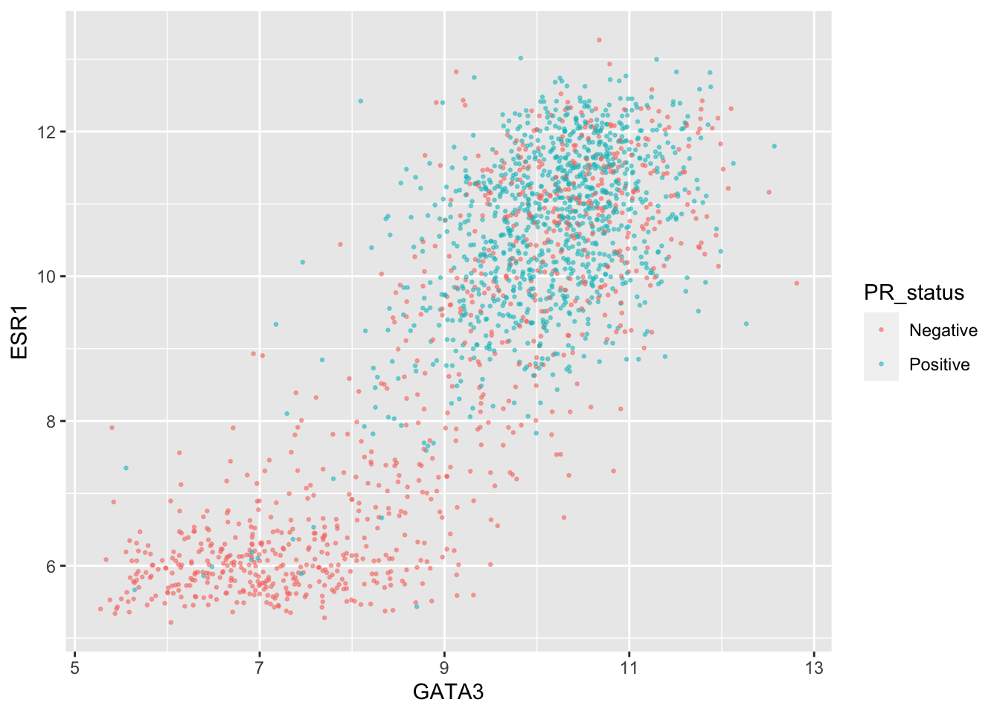
An alternative is to use faceting with
facet_wrap().
ggplot(data = metabric, mapping = aes(x = GATA3, y = ESR1)) +
geom_point(size = 0.5, alpha = 0.5) +
facet_wrap(vars(PR_status))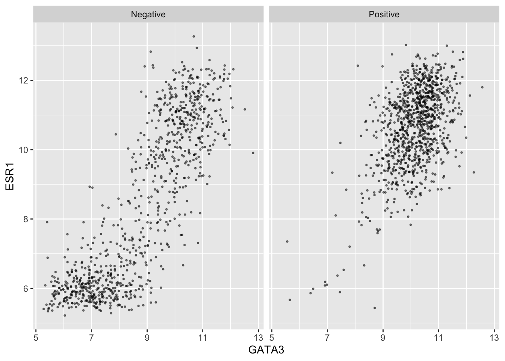
This produces two plots, side-by-side, one for each of the categories
in the PR_status variable, with a banner across the top of
each for the category.
The variable(s) used for faceting are specified using
vars() in a similar way to the selection of variables for
mutate_at() and summarise_at().
We can still use separate colours if we prefer things to be, well, colourful.
ggplot(data = metabric, mapping = aes(x = GATA3, y = ESR1, colour = PR_status)) +
geom_point(size = 0.5, alpha = 0.5) +
facet_wrap(vars(PR_status))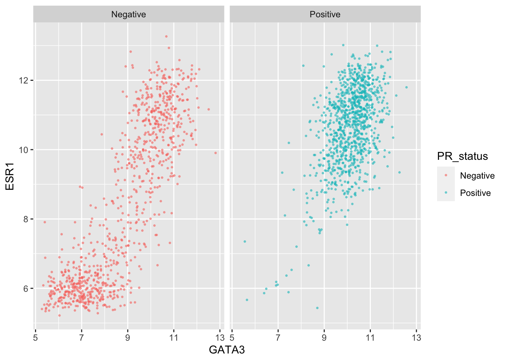
Faceting is usually better than displaying groups using different colours when there are more than two or three groups when it can be difficult to really tell which points belong to each group. A case in point is for the 3-gene classification in the GATA3 vs ESR1 scatter plot we created last week. Let’s create a faceted version of that plot.
ggplot(data = metabric, mapping = aes(x = GATA3, y = ESR1, colour = `3-gene_classifier`)) +
geom_point(size = 0.5, alpha = 0.5) +
facet_wrap(vars(`3-gene_classifier`))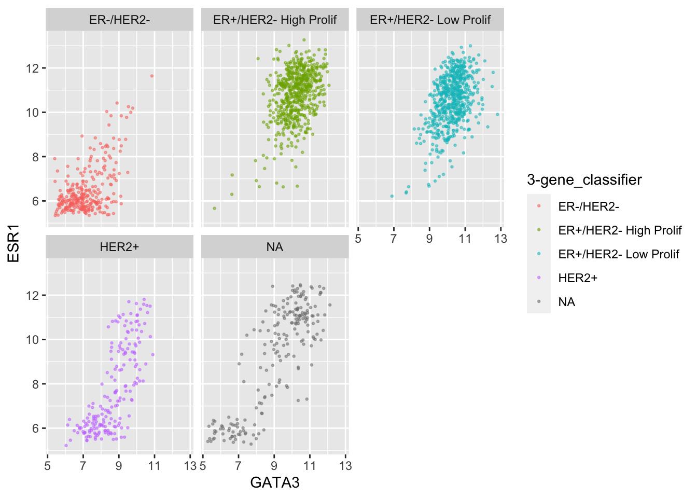
This helps explain why the function is called
facet_wrap(). When it has too many subplots to fit across
the page, it wraps around to another row. We can control how many rows
or columns to use with the nrow and ncol
arguments.
ggplot(data = metabric, mapping = aes(x = GATA3, y = ESR1, colour = `3-gene_classifier`)) +
geom_point(size = 0.5, alpha = 0.5) +
facet_wrap(vars(`3-gene_classifier`), nrow = 1)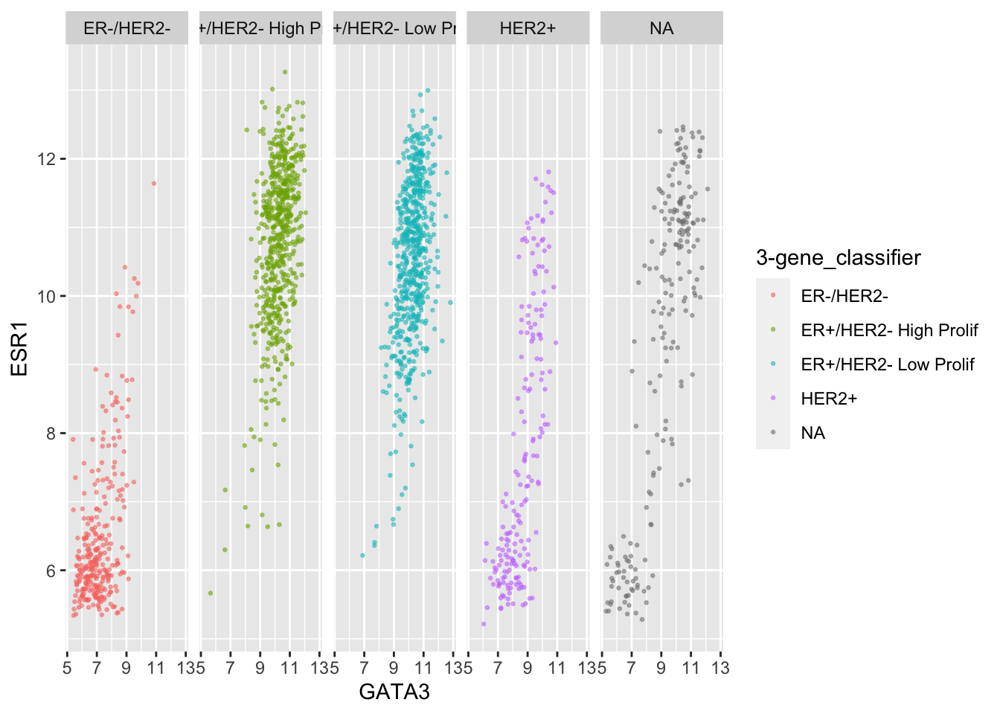
ggplot(data = metabric, mapping = aes(x = GATA3, y = ESR1, colour = `3-gene_classifier`)) +
geom_point(size = 0.5, alpha = 0.5) +
facet_wrap(vars(`3-gene_classifier`), ncol = 2)
We can combine faceting on one variable with a colour aesthetic for another variable. For example, let’s show the tumour stage status using faceting and the HER2 status using colours.
ggplot(data = metabric, mapping = aes(x = GATA3, y = ESR1, colour = HER2_status)) +
geom_point(size = 0.5, alpha = 0.5) +
facet_wrap(vars(Neoplasm_histologic_grade))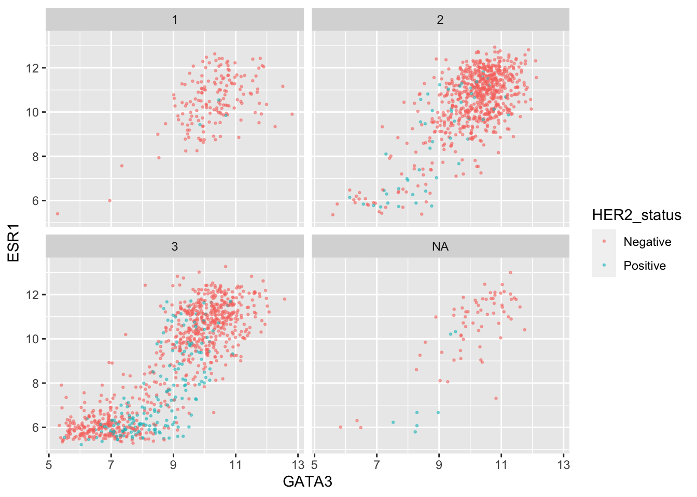
Instead of this we could facet on more than variable.
ggplot(data = metabric, mapping = aes(x = GATA3, y = ESR1)) +
geom_point(size = 0.5, alpha = 0.5) +
facet_wrap(vars(Neoplasm_histologic_grade, HER2_status))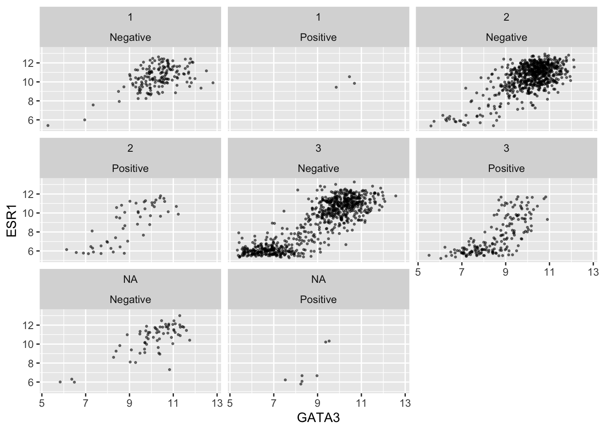
Faceting on two variables is usually better done using the other
faceting function, facet_grid(). Note the
change in how the formula is written.
ggplot(data = metabric, mapping = aes(x = GATA3, y = ESR1)) +
geom_point(size = 0.5, alpha = 0.5) +
facet_grid(vars(Neoplasm_histologic_grade), vars(HER2_status))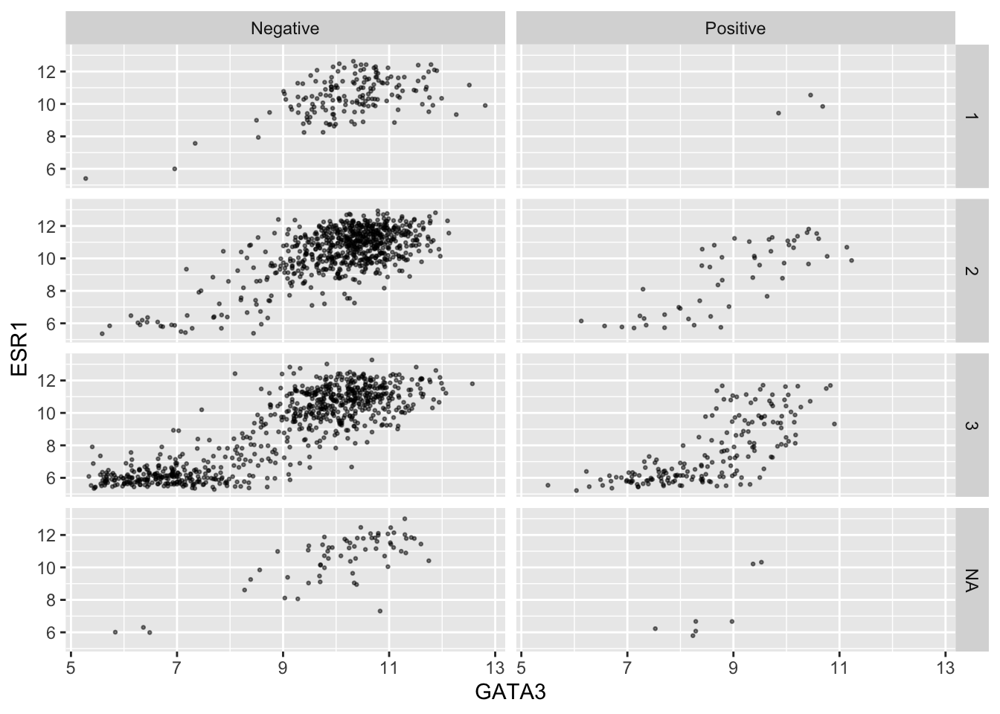
Again we can use colour aesthetics alongside faceting to add further information to our visualization.
ggplot(data = metabric, mapping = aes(x = GATA3, y = ESR1, colour = PAM50)) +
geom_point(size = 0.5, alpha = 0.5) +
facet_grid(vars(Neoplasm_histologic_grade), vars(HER2_status))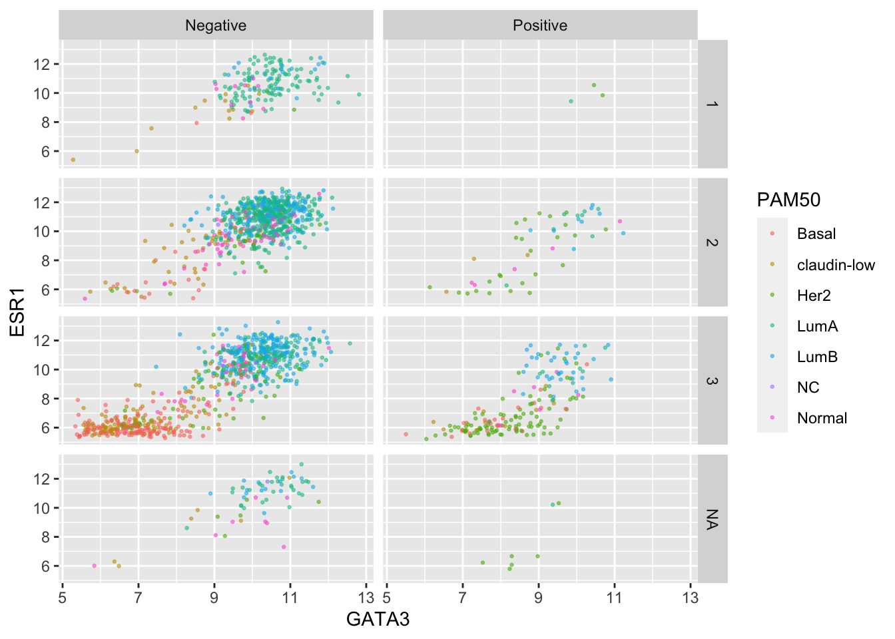
Finally, we can use a labeller to change the labels for
each of the categorical values so that these are more meaningful in the
context of this plot.
grade_labels <- c("1" = "Grade I", "2" = "Grade II", "3" = "Grade III")
her2_status_labels <- c("Positive" = "HER2 positive", "Negative" = "HER2 negative")
#
ggplot(data = metabric, mapping = aes(x = GATA3, y = ESR1, colour = PAM50)) +
geom_point(size = 0.5, alpha = 0.5) +
facet_grid(vars(Neoplasm_histologic_grade),
vars(HER2_status),
labeller = labeller(
Neoplasm_histologic_grade = grade_labels,
HER2_status = her2_status_labels
)
)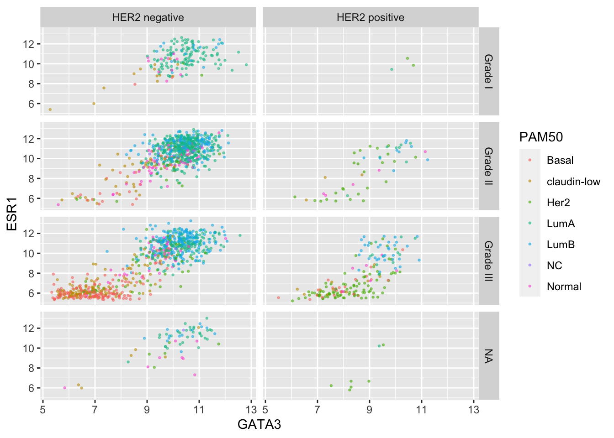
This would certainly be necessary if we were to use ER and HER2 status on one side of the grid.
er_status_labels <- c("Positive" = "ER positive", "Negative" = "ER negative")
#
ggplot(data = metabric, mapping = aes(x = GATA3, y = ESR1, colour = PAM50)) +
geom_point(size = 0.5, alpha = 0.5) +
facet_grid(vars(Neoplasm_histologic_grade),
vars(ER_status, HER2_status),
labeller = labeller(
Neoplasm_histologic_grade = grade_labels,
ER_status = er_status_labels,
HER2_status = her2_status_labels
)
)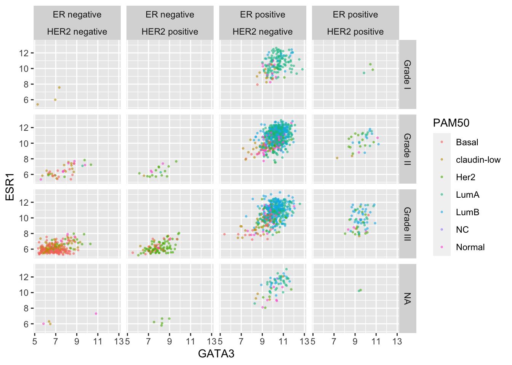
Summary
In this session we have covered the following concepts:
- Building up workflows by chaining operations together using the pipe operator
- Sorting rows based on values in one or more columns
- Modifying a data frame by either adding new columns or modifying existing ones
- Summarizing the values in one or more columns
- Faceting of ggplot2 visualizations
Exercises
The week’s exercises will test your ability to manipulate the METABRIC data set by changing the values of existing columns or adding new columns by computing new variables from existing ones.
We are expecting you to use the 5 main dplyr ‘verb’ functions:
select(), filter(), arrange(),
mutate() and summarize(). Please use the pipe
operator, %>%, in cases where more than one operation is
required to achieve the outcome requested.
library(tidyverse)
metabric <- read_csv("data/metabric_clinical_and_expression_data.csv")1. Investigate the subset of long-surviving breast cancer patients that didn’t receive chemo or radiotherapy
First obtain the subset of patients that received neither chemotherapy or radiotherapy and survived for more than 20 years.
Now look at the breakdown of these patients in terms of ER status. Count the numbers of ER positive and ER negative patients in this subset. Calculate the proportion that are ER positive.
What does this tell us? Calculate the proportion of ER positive patients in the whole cohort by way of a comparison.
2. Which patients have spent the largest proportion of their lives dealing with breast cancer?
### Hint
### Create Survival_time_years
### Add it to Age_at_diagnosis
### Create Proportion: Survival_time_years/Age3. Convert the expression values for each of the genes into standardized z-scores
Some genes are generally expressed at higher levels than others. This can make comparisons of changes between groups for a set of genes somewhat difficult, particularly if the expression for those genes are on very different scales. The expression values in our METABRIC are on a log2 scale which helps to reduce the range of values but another method for representing expression measurements is to standardize these to produce z-scores.
Standardization of a set of measurements involves subtracting the mean from each and dividing by the standard deviation. This will produce values with a mean of 0 and a standard deviation of 1.
Create a modified version of the metabric data frame
containing a new column with the standardized expression values
(z-scores) for the ESR1 gene.
### Hint
### ESR1 - mean(ESR1)) / sd(ESR1)Check that you’ve done this correctly by calculating the mean and standard deviation of your new z-score variable.
Add another column to your modified metabric data frame
containing a z-score for GATA3 and then create a scatter plot of the
z-scores of GATA3 against ESR1. Modify your plot to facet by the PAM50
classification.
4. Which Star Wars characters need to go on a diet?
Compute the body mass index (BMI) of characters in the
starwars tibble.
Filter for human characters that are overweight (BMI > 25) and display in decreasing order of BMI.